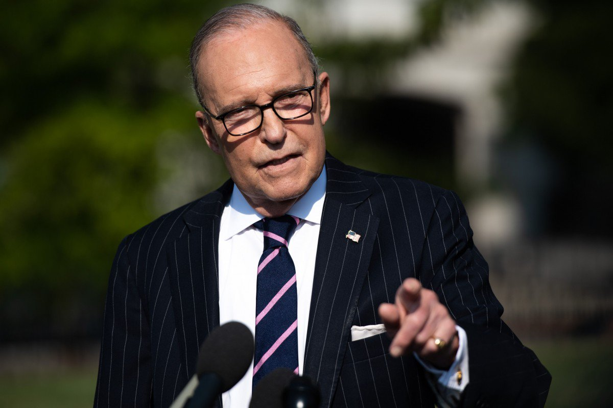
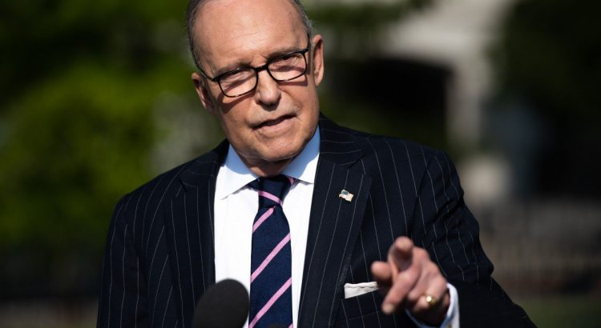
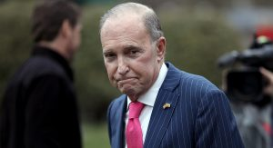
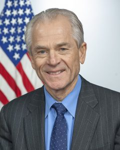

White House Economic Advisor: China and US Working Hard to Resume Negotiations

US President Trump’s Chief Economic Adviser, Larry Kudlow said on August 18th that the Washington and Beijing authorities are actively working to resume trade negotiations to end the US-China trade war that disrupts the global market.Kudlow also said that despite the turmoil in the global financial market, there will be no economic recession, and the trade war against China has not harmed the US economy.
Kudlow appeared on the Fox program 'Fox News Sunday' and said that conference calls between the representatives of both parties will progress smoothly in the next 10 days.'We can substantially resume negotiations,' he said, adding, 'At that time, we plan to let Chinese representatives come to the United States to meet with our main representatives to continue negotiations.'
US Treasury Secretary Steven Mnuchin and US Trade Representative Robert Lighthizer went to Shanghai for talks with China in July and then returned empty-handed.It is still unknown whether the Chinese delegation will travel to Washington in September for negotiations.
Kudlow stressed that the telephone consultations between the two sides last week were far more positive than the media reports.Also, in a series of signs about the global economic slowdown, Kudlow insisted that the economic outlook is not bleak, he said: 'We should not be afraid of optimism, I am sure that we will not see the economic recession.'
Kudlow said that even though negotiations are now stalled, China’s imports are facing additional tariffs, and the US economy is still 'good.'Kudlow said, 'There will be no recession…Consumers are working hard.Their wages are increasing.They are spending money and also saving.'
Just last week, public concerns about a possible recession in the US led to instability in the financial markets and some government officials were worried about whether the US economic development momentum could survive the 2020 presidential election year.Democrats on the 18th attacked Trump’s trade policy for posing a short-term threat.
White House trade adviser Peter Navarro told ABC’s 'This Week' program that the financial market turmoil last week was not worth alerting.He said that good economic momentum is encouraging investors to transfer money to the United States.Navarro said, 'Our economy is the strongest in the world, and money is being invested in our stock market.Money is also invested in our bond market to pursue profits.'Navarro said that the tariff imposed on Chinese products did not hurt anyone in the U.S.
However, many Democratic presidential candidates disagreed with this economic analysis.They believe the US government’s elusive trade policy has increased economic uncertainty and damaged business investment, leading to stock market turmoil.Democratic presidential candidate Beto O’Rourke told NBC’s 'Facing the Media' program, 'I am worried that the president is taking the global economy and our country’s economy into recession.'
[bsa_pro_ad_space id=4]
Posted On: 2019-08-19T00:00:00
Posted By: Benedict Kasigara






Content Date: 2019-08-19
Download Date: 2021-07-09
Document ID: L0C04DPYT